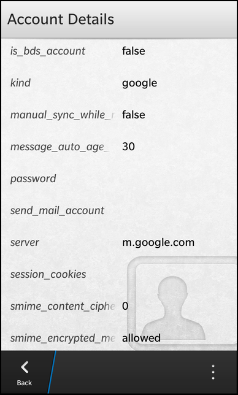

Accounts Example
Files:
- accounts/assets/AccountEditor.qml
- accounts/assets/AccountViewer.qml
- accounts/assets/EditorField.qml
- accounts/assets/ViewerField.qml
- accounts/assets/main.qml
- accounts/src/AccountEditor.cpp
- accounts/src/AccountEditor.hpp
- accounts/src/AccountViewer.cpp
- accounts/src/AccountViewer.hpp
- accounts/src/Accounts.cpp
- accounts/src/Accounts.hpp
- accounts/src/main.cpp
- accounts/accounts.pro
- accounts/translations/accounts.pro
Description
The Accounts example is a simple account management application to list, view, edit and delete the accounts available on the system or create new ones.



Overview
In this example we'll learn how to use the bb::pim::account API of the BB10 framework to work with the accounts available on the system.
The application has a clean separation between business logic and UI representation. All the business logic is encapsulated inside the three C++ classes Accounts, AccountViewer and AccountEditor. These classes use the bb::pim::account API internally to communicate with the account service of BB10 and provide all the necessary functionality and data to the UI via properties, signals and slots. The Accounts object is exported to the UI under the name '_accounts'.
The UI
The UI of this sample application consists of four pages:
- The main page
- The 'view account' page
- The 'edit account' page
- The 'create new account' page
The main page
The main page contains a ListView that displays a list of accounts and a DropDown where the user can select a service type that is used as filter criterion for the list.
// The accounts list filter DropDown { title: qsTr ("Service") Option { text: qsTr ("Calendars") value: "Calendars" selected: true } Option { text: qsTr ("Contacts") value: "Contacts" } Option { text: qsTr ("Notebook") value: "Notebook" } Option { text: qsTr ("Geolocations") value: "Geolocations" } Option { text: qsTr ("Linking") value: "Linking" } Option { text: qsTr ("Memos") value: "Memos" } Option { text: qsTr ("Messages") value: "Messages" } Option { text: qsTr ("Tags") value: "Tags" } Option { text: qsTr ("Tasks") value: "Tasks" } Option { text: qsTr ("Phone") value: "Phone" } onSelectedValueChanged: _accounts.filter = selectedValue }
Whenever the user selects a service type, the 'filter' property of the exported Accounts object is updated.
// The list view with all contacts ListView { dataModel: _accounts.model listItemComponents: ListItemComponent { type: "item" StandardListItem { title: ListItemData.provider description: ListItemData.displayName } } onTriggered: { clearSelection() select(indexPath) _accounts.setCurrentAccount(indexPath) _accounts.viewAccount(); navigationPane.push(accountViewer.createObject()) } }
The ListView uses the model provided by the Accounts object as data model and shows the provider name and display name properties inside the items.
Whenever the user clicks on an item, setCurrentAccount() is called on the Accounts object, which will mark the selected account as the 'current' account for viewing and editing. Afterwards the viewAccount() method is invoked on the Accounts object. This will setup the AccountViewer object to make the data of the current account available to the 'view account' page. Finally, the 'view account' page is pushed on the NavigationPane.
attachedObjects: [ ComponentDefinition { id: accountEditor source: "AccountEditor.qml" }, ComponentDefinition { id: accountViewer source: "AccountViewer.qml" } ]
This page is loaded dynamically from a ComponentDefinition that references the file AccountViewer.qml
The main page also contains an ActionItem inside its action bar, which can be invoked by the user to create a new account.
actions: [ ActionItem { title: qsTr ("New") imageSource: "asset:///images/action_addaccount.png" ActionBar.placement: ActionBarPlacement.OnBar onTriggered: { _accounts.createAccount() navigationPane.push(accountEditor.createObject()) } } ]
When the action is triggered, the createAccount() method is invoked on the Accounts object, which will setup the AccountEditor object to be in creation mode. Afterwards the 'create new account' page is pushed on the NavigationPane. This page is loaded dynamically from a ComponentDefinition that references the file AccountEditor.qml.
The 'view account' page
The 'view account' page is implemented inside AccountViewer.qml and retrieves all the data to display from the AccountViewer object, which is accessible as a property of the Accounts object.
ListView { horizontalAlignment: HorizontalAlignment.Fill verticalAlignment: VerticalAlignment.Fill leftPadding: 30 topPadding: 30 rightPadding: 30 bottomPadding: 30 dataModel: _accounts.accountViewer.fields listItemComponents: ListItemComponent { type: "" ViewerField { title: ListItemData.title value: ListItemData.value } } }
The UI of the page consists of a list of ViewerField objects (which are implemented in ViewerField.qml), one for each account property. However since the number of properties of an account depends on its provider, the UI of the page is generated dynamically inside a ListView. The description of the single fields are provided through the 'fields' property of the Accounts class, which is used as data model by the ListView.
actions: [ ActionItem { title: qsTr ("Edit") imageSource: "asset:///images/action_editaccount.png" onTriggered: { _accounts.editAccount() navigationPane.push(accountEditor.createObject()) } }, DeleteActionItem { onTriggered: { _accounts.deleteAccount() navigationPane.pop() } } ]
To edit or delete the currently displayed account, the page contains two ActionItems. If the one for deleting the account is triggered, the deleteAccount() method is invoked on the Accounts object, which will call the appropriated methods on the bb::pim::account API internally. If the action for editing the account is triggered, the editAccount() method is invoked on the Accounts object, which will setup the AccountEditor object to be in editing mode and make the data of the current account available to the 'edit account' page. Afterwards the 'edit account' page is pushed on the NavigationPane.
attachedObjects: [ ComponentDefinition { id: accountEditor source: "AccountEditor.qml" } ]
The 'edit account' page is loaded dynamically from a ComponentDefinition that references the file AccountEditor.qml.
The 'edit account' and 'create new account' page
For creating a new account or editing an existing one the same UI (AccountEditor.qml) is used. The underlying business object AccountEditor provides the property 'mode' to differ between the CreateMode and EditMode.
The page contains two actions in its TitleBar to create/save the current account or cancel the operation.
titleBar: TitleBar { id: pageTitleBar // The 'Create/Save' action acceptAction: ActionItem { title: (_accounts.accountEditor.mode == AccountEditor.CreateMode ? qsTr ("Create" ) : qsTr ("Save")) onTriggered: { _accounts.accountEditor.saveAccount() navigationPane.pop() } } // The 'Cancel' action dismissAction: ActionItem { title: qsTr ("Cancel") onTriggered: navigationPane.pop() } }
Depending on the current mode the title of the accept action is set to 'Create' or 'Save'. In both cases, an invocation of the action will call the saveAccount() method on the AccountEditor object, which will do the right thing internally, depending on the current mode.
If the user selects the dismiss action, the current page is popped from the NavigationPane.
ScrollView { horizontalAlignment: HorizontalAlignment.Fill verticalAlignment: VerticalAlignment.Fill scrollViewProperties { scrollMode: ScrollMode.Vertical } Container { id: form } }
For each property of an account, the page contains an editor field which is generated dynamically from within the Accounts class. The parent Container is passed through the 'form' property to the Accounts object after the UI has been created.
Note: This is actually not the recommended way, since the business logic should never make assumptions about the layer above (the UI), but currently there is no other way in Cascades to implement it.
onCreationCompleted: { _accounts.accountEditor.form = form }
The Business Logic
To have a clean separation between business logic and UI, the business logic is implemented in the three C++ classes Accounts, AccountViewer and AccountEditor.
Accounts
The Accounts class is the central point to access the business logic from within the UI. Therefor the object is exported to QML under the name '_accounts' inside the main function.
// Load the UI description from main.qml QmlDocument *qml = QmlDocument::create("asset:///main.qml").parent(&app); // Make the Accounts object available to the UI as context property qml->setContextProperty("_accounts", new Accounts(&app));
The Accounts object provides the list of available accounts as a custom property 'model' of type bb::cascades::GroupDataModel, so that a ListView in the UI can use it directly as its data model. Additionally the Accounts object provides a 'filter' property to define a filter string that is applied on the list of accounts. The other two business logic objects AccountViewer and AccountEditor can be accessed through the 'accountViewer' and 'accountEditor' properties.
class Accounts : public QObject { Q_OBJECT // The model that provides the filtered list of accounts Q_PROPERTY(bb::cascades::GroupDataModel *model READ model CONSTANT); // The pattern to filter the list of accounts Q_PROPERTY(QString filter READ filter WRITE setFilter NOTIFY filterChanged); // The editor object for the current account Q_PROPERTY(AccountEditor* accountEditor READ accountEditor CONSTANT); // The viewer object for the current account Q_PROPERTY(AccountViewer* accountViewer READ accountViewer CONSTANT); public: Accounts(QObject *parent = 0); public Q_SLOTS: /** * Marks the account with the given @p indexPath as current. */ void setCurrentAccount(const QVariantList &indexPath); /** * Prepares the account editor to create a new account. */ void createAccount(); /** * Prepares the account editor to edit the current account. */ void editAccount(); /** * Prepares the account viewer to display the current account. */ void viewAccount(); /** * Deletes the current account. */ void deleteAccount(); Q_SIGNALS: // The change notification signal for the property void filterChanged(); private Q_SLOTS: // Filters the accounts in the model according to the filter property void filterAccounts(); private: // The accessor methods of the properties bb::cascades::GroupDataModel* model() const; QString filter() const; void setFilter(const QString &filter); AccountEditor* accountEditor() const; AccountViewer* accountViewer() const; // The central object to access the account service bb::pim::account::AccountService* m_accountService; // The property values bb::cascades::GroupDataModel* m_model; QString m_filter; // The controller object for editing an account AccountEditor* m_accountEditor; // The controller object for viewing an account AccountViewer* m_accountViewer; // The ID of the current account bb::pim::account::AccountKey m_currentAccountId; };
To use the AccountViewer and AccountEditor objects as property types, they must be registered to the QML type system inside the main function as well.
// Register our custom types with QML, so that they can be used as property types qmlRegisterUncreatableType<AccountEditor>("com.example.bb10samples.pim.accounts", 1, 0, "AccountEditor", "Usage as property type and access to enums"); qmlRegisterType<AccountViewer>();
Inside the constructor all member objects are initialized. The AccountService is the central point of the bb::pim::account API to access account information on the BB10 platform.
Accounts::Accounts(QObject *parent) : QObject(parent) , m_accountService(new AccountService()) , m_model(new GroupDataModel(this)) , m_filter("Calendars") , m_accountEditor(new AccountEditor(m_accountService, this)) , m_accountViewer(new AccountViewer(m_accountService, this)) , m_currentAccountId(-1) { // Disable grouping in data model m_model->setGrouping(ItemGrouping::None); // Ensure to invoke the filterAccounts() method whenever an account has been added, changed or removed connect(m_accountService, SIGNAL(accountsChanged(bb::pim::account::AccountsChanged)), SLOT(filterAccounts())); // Fill the data model with accounts initially filterAccounts(); }
The filterAccounts() method retrieves all accounts from the AccountService that provide the service type as specified by the filter and fills the data model with the result. The ID of the account is stored inside the model together with the data that will be displayed in the ListView.
void Accounts::filterAccounts() { static QHash<QString, Service::Type> serviceTypes; if (serviceTypes.isEmpty()) { serviceTypes.insert(QLatin1String("Calendars"), Service::Calendars); serviceTypes.insert(QLatin1String("Contacts"), Service::Contacts); serviceTypes.insert(QLatin1String("Notebook"), Service::Notebook); serviceTypes.insert(QLatin1String("Geolocations"), Service::Geolocations); serviceTypes.insert(QLatin1String("Linking"), Service::Linking); serviceTypes.insert(QLatin1String("Memos"), Service::Memos); serviceTypes.insert(QLatin1String("Messages"), Service::Messages); serviceTypes.insert(QLatin1String("Tags"), Service::Tags); serviceTypes.insert(QLatin1String("Tasks"), Service::Tasks); serviceTypes.insert(QLatin1String("Phone"), Service::Phone); } const QList<Account> accounts = m_accountService->accounts(serviceTypes.value(m_filter)); // Clear the old account information from the model m_model->clear(); // Iterate over the list of accounts foreach (const Account &account, accounts) { // Copy the data into a model entry QVariantMap entry; entry["accountId"] = account.id(); entry["provider"] = account.provider().name(); entry["displayName"] = account.displayName(); // Add the entry to the model m_model->insert(entry); } }
Whenever the user changes the filter criterion, the setFilter() method is invoked, which updates the filter value and calls the filterAccounts() method again.
void Accounts::setFilter(const QString &filter) { if (m_filter == filter) return; m_filter = filter; emit filterChanged(); // Update the model now that the filter criterion has changed filterAccounts(); }
Whenever the user selects an account in the ListView, the setCurrentAccount() method is invoked. If the selected index path is valid, the ID of the account is extracted and stored as 'current' account.
void Accounts::setCurrentAccount(const QVariantList &indexPath) { // Extract the ID of the selected account from the model if (indexPath.isEmpty()) { m_currentAccountId = -1; } else { const QVariantMap entry = m_model->data(indexPath).toMap(); m_currentAccountId = entry.value("accountId").toLongLong(); } }
Afterwards the UI invokes the viewAccount() method, that triggers the AccountViewer to load the data for the current account.
void Accounts::viewAccount() { // Prepare the account viewer for displaying the current account m_accountViewer->setAccountId(m_currentAccountId); }
If the user triggers the 'Delete' action from the 'view account' page, deleteAccount() is invoked, which forwards this request to the AccountService.
void Accounts::deleteAccount() { m_accountService->deleteAccount(m_currentAccountId); }
If the user wants to edit the current account, the UI calls editAccount(), which triggers the AccountEditor to load the data of the current account and switches the AccountEditor into EditMode.
void Accounts::editAccount() { // Prepare the account editor for editing the current account m_accountEditor->loadAccount(m_currentAccountId); m_accountEditor->setMode(AccountEditor::EditMode); }
If the user wants to create a new account, the UI calls createAccount(), which resets the AccountEditor and switches it into CreateMode.
void Accounts::createAccount() { // Prepare the account editor for creating a new account m_accountEditor->reset(); m_accountEditor->setMode(AccountEditor::CreateMode); }
AccountViewer
The AccountViewer class is an UI-independent representation of the account viewer, that provides all the functionality and data as slots and properties. It encapsulates all the logic of loading an account from the persistent storage, provides its data as properties and updates the properties automatically if the account has changed in the storage backend.
class AccountViewer : public QObject { Q_OBJECT // The abstract description of the viewer fields Q_PROPERTY(bb::cascades::DataModel* fields READ fields CONSTANT) public: AccountViewer(bb::pim::account::AccountService *service, QObject *parent = 0); // Sets the ID of the account that should be displayed. void setAccountId(bb::pim::account::AccountKey accountId); private Q_SLOTS: /** * This slot is invoked whenever the account service reports that an account has been changed. */ void accountsChanged(const bb::pim::account::AccountsChanged &changed); private: // The accessor methods of the property bb::cascades::DataModel* fields() const; // Loads the account from the persistent storage and updates the properties void updateAccount(); // The central object to access the account service bb::pim::account::AccountService* m_accountService; // The ID of the account that is displayed bb::pim::account::AccountKey m_accountId; // The property value bb::cascades::QMapListDataModel* m_fields; };
Inside the constructor the accountsChanged() signal of the AccountService is connected against the custom accountsChanged() slot to reload the currently displayed account from the persistent storage if it has been changed by some other entity.
AccountViewer::AccountViewer(AccountService *service, QObject *parent) : QObject(parent) , m_accountService(service) , m_accountId(-1) , m_fields(new QMapListDataModel()) { m_fields->setParent(this); // Ensure to invoke the accountsChanged() method whenever an account has been changed connect(m_accountService, SIGNAL(accountsChanged(bb::pim::account::AccountsChanged)), SLOT(accountsChanged(bb::pim::account::AccountsChanged))); }
The method setAccountId() is invoked by the Accounts object to prepare the viewer to display an account in the UI. In this method the passed ID is stored locally and updateAccount() is called afterwards.
void AccountViewer::setAccountId(AccountKey accountId) { m_accountId = accountId; // Trigger a refetch of the account for the new ID updateAccount(); }
Inside updateAccount() the actual account data are loaded from the persistent storage through the AccountService object. For that purpose the settings keys are retrieved from the account's provider and for each key an entry is added to the data model that describes the viewer fields. The UI will now automatically display a new viewer field.
void AccountViewer::updateAccount() { // Clear all field descriptions from the model m_fields->clear(); // Fetch new values from persistent storage const Account account = m_accountService->account(m_accountId); foreach (const QString &key, account.provider().settingsKeys()) { const QVariant value = account.settingsProperty(key); // Add a new description to the model QVariantMap entry; entry["title"] = key; entry["value"] = valueToString(value); m_fields->append(entry); } }
The custom slot accountsChanged() checks whether the currently displayed account is in the change set and calls updateAccount() accordingly.
void AccountViewer::accountsChanged(const AccountsChanged &changed) { /** * Call updateAccount() only if the account we are currently displaying * has been changed. */ if (changed.updatedAccountIds().contains(m_accountId)) updateAccount(); }
AccountEditor
The AccountEditor class is an UI-independent representation of the account editor, that provides all the functionality and data as slots and properties. It encapsulates all the logic of creating a new account or updating an existing one.
class AccountEditor : public QObject { Q_OBJECT // The ID of the provider the account belongs to Q_PROPERTY(QString providerId READ providerId WRITE setProviderId NOTIFY providerIdChanged) // The container where all the editor fields are located in Q_PROPERTY(bb::cascades::Container* form READ form WRITE setForm NOTIFY formChanged) // Defines whether the editor is in 'create' or 'edit' mode Q_PROPERTY(Mode mode READ mode WRITE setMode NOTIFY modeChanged) Q_ENUMS(Mode) public: /** * Describes the mode of the account editor. * The mode information are used to adapt the behavior of the editor and * provide hints to the UI. */ enum Mode { CreateMode, EditMode }; AccountEditor(bb::pim::account::AccountService *service, QObject *parent = 0); void setMode(Mode mode); Mode mode() const; public Q_SLOTS: /** * Loads the account with the given ID. */ void loadAccount(bb::pim::account::AccountKey accountId); /** * Save the currently loaded account if in 'edit' mode or creates a new one * if in 'create' mode. */ void saveAccount(); /** * Resets all fields of the account editor. */ void reset(); Q_SIGNALS: // The change notification signals of the properties void providerIdChanged(); void formChanged(); void modeChanged(); private: // The accessor methods of the properties QString providerId() const; void setProviderId(const QString &providerId); bb::cascades::Container* form() const; void setForm(bb::cascades::Container *form); // Loads the account data from persistent storage into fields void loadAccount(); // Updates the fields according to the configured provider void updateFields(); // The central object to access the account service bb::pim::account::AccountService *m_accountService; // The ID of the currently loaded account (if in 'edit' mode) bb::pim::account::AccountKey m_accountId; // The property values QString m_providerId; QPointer<bb::cascades::Container> m_form; Mode m_mode; QHash<QString, bb::cascades::Control*> m_fields; };
Inside the constructor the member variables are initialized with the default values.
AccountEditor::AccountEditor(AccountService *service, QObject *parent) : QObject(parent) , m_accountService(service) , m_accountId(-1) , m_providerId("caldav") , m_mode(CreateMode) { }
If the user wants to edit an existing account, the Accounts object invokes loadAccount() to load the account data from the persistent storage and make them available to the UI.
void AccountEditor::loadAccount(AccountKey accountId) { m_accountId = accountId; updateFields(); loadAccount(); }
After the passed account ID is stored in a member variable, updateFields() is called. This method recreates the editor fields in the UI dynamically according to the Provider that is currently selected.
void AccountEditor::updateFields() { if (m_form.isNull()) return; // Clear all fields from the form m_form->removeAll(); // Clear the internal mapping m_fields.clear(); // Retrieve the provider of the current account or the one selected by the user in 'create' mode const Provider provider = (m_accountId == -1 ? m_accountService->provider(m_providerId) : m_accountService->account(m_accountId).provider()); // Iterate over all settings keys of the provider foreach (const QString &key, provider.settingsKeys()) { // Instantiate an editor field for this settings key QmlDocument *qml = QmlDocument::create("asset:///EditorField.qml").parent(this); Control *field = qml->createRootObject<Control>(); // Configure the field according to the settings key field->setProperty("type", provider.settingsProperty(key, Property::Type)); field->setProperty("title", key); // Add the field to the container m_form->add(field); // Add the field to the internal mapping m_fields.insert(key, field); } }
After the old editor fields have been removed and the internal mapping has been cleared, the Provider object is retrieved, either from the current account (if in 'edit' mode) or from the AccountService (if in 'create' mode). In the next step an EditorField object is instantiated from EditorField.qml, one for each settings key of the Provider. After the type and title has been set on the editor field, it is added to the Container and the internal mapping.
If loadAccount() is called (in 'edit' mode), the settings values for the current account are retrieved and the associated EditorFields are filled with the values.
void AccountEditor::loadAccount() { if (m_accountId == -1) return; // Fetch new values from persistent storage const Account account = m_accountService->account(m_accountId); // Iterate over all settings keys of the provider foreach (const QString &key, account.provider().settingsKeys()) { // Retrieve the value for this settings key const QVariant value = account.settingsProperty(key); // Lookup the matching field for this key and update the value Control *field = m_fields.value(key); if (field) field->setProperty("value", value); } }
When the user clicks on the 'Create'/'Save' button in the UI, saveAccount() is invoked. Depending on the current mode, a new account is created or the current one modified. In both cases for each settings key the value is read from the associated EditField and stored inside the Account object.
void AccountEditor::saveAccount() { if (m_mode == CreateMode) { const Provider provider = m_accountService->provider(m_providerId); Account account(provider); // Iterate over all settings keys of the provider foreach (const QString &key, provider.settingsKeys()) { // Lookup the matching field for this key and retrieve the value Control *field = m_fields.value(key); if (field) { const QVariant value = field->property("value"); if (value.isValid()) account.setSettingsValue(key, value); } } m_accountService->createAccount(provider.id(), account); } else if (m_mode == EditMode) { Account account = m_accountService->account(m_accountId); // Iterate over all settings keys of the provider foreach (const QString &key, account.provider().settingsKeys()) { // Lookup the matching field for this key and retrieve the value Control *field = m_fields.value(key); if (field) account.setSettingsValue(key, field->property("value")); else account.setSettingsValue(key, QVariant()); } m_accountService->updateAccount(account.id(), account); } }
If the user wants to create a new account, the Accounts object invokes the reset() method to clear all fields of the AccountEditor.
void AccountEditor::reset() { m_accountId = -1; m_providerId = "caldav"; if (m_form) m_form->removeAll(); m_fields.clear(); }